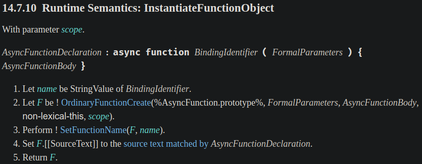
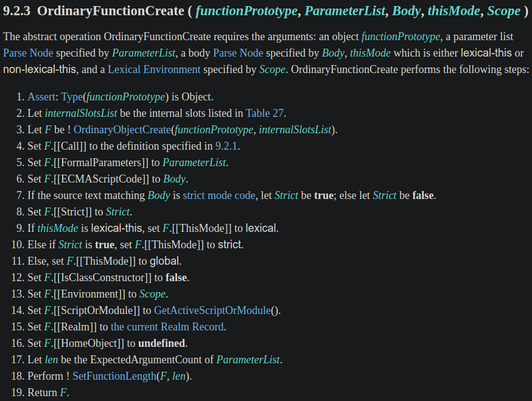
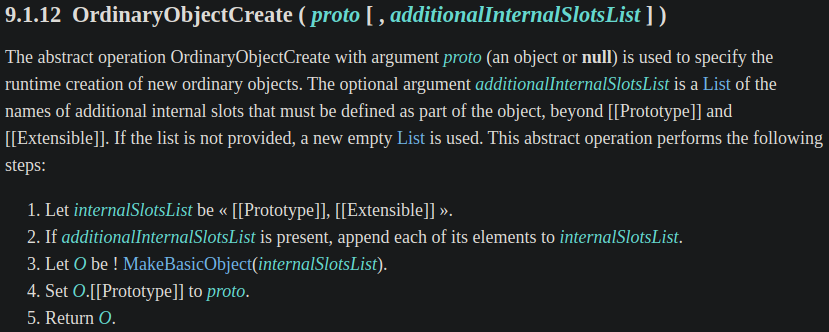
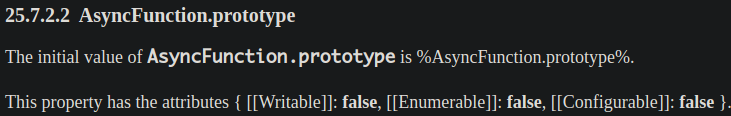
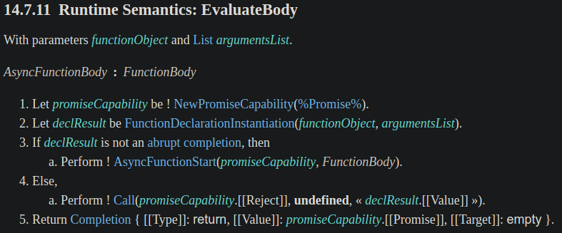
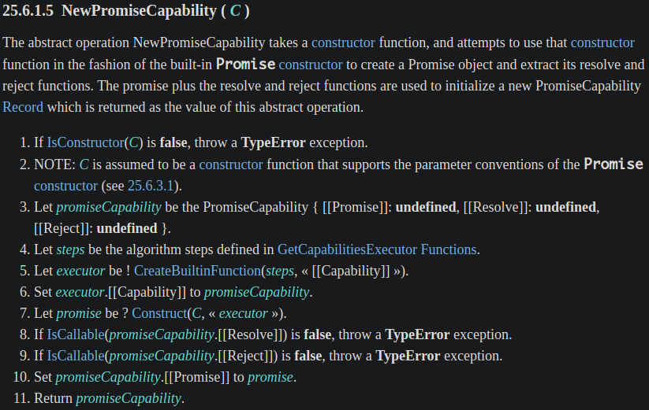
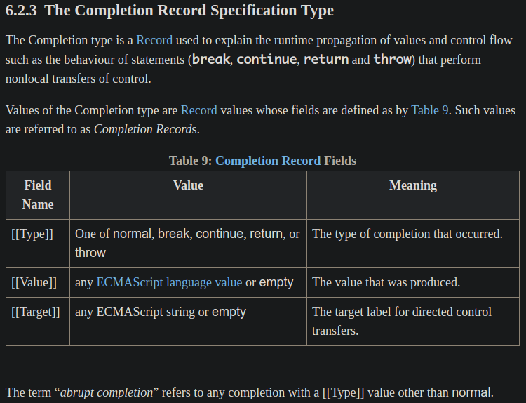
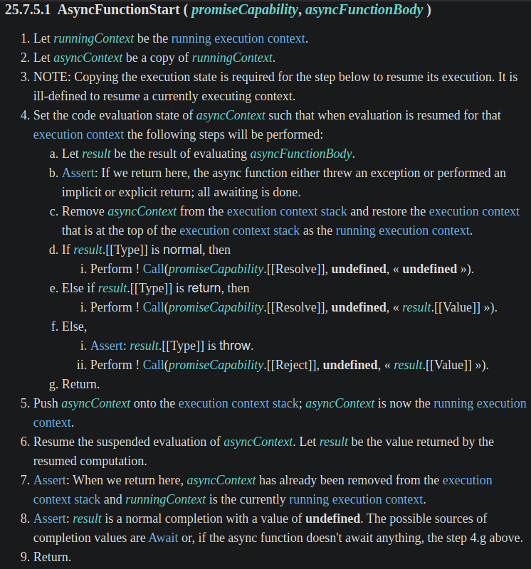

<!DOCTYPE html><html><head><meta charset="utf-8"><title>JavaScript 之旅 (6)：Async Functions &amp; await expression (1) | Titangene Blog</title><meta http-equiv="X-UA-Compatible" content="IE=edge"><meta name="viewport" content="width=device-width,initial-scale=1,maximum-scale=1"><meta name="HandheldFriendly" content="True"><meta name="apple-mobile-web-app-capable" content="yes"><meta name="author" content="Titangene"><link rel="shortcut icon" href="/favicon.ico"><link rel="alternate" href="/atom.xml" title="Titangene Blog"><meta name="description" content="本篇來介紹 Async Functions &amp; await expression。"><meta property="og:type" content="article"><meta property="og:title" content="JavaScript 之旅 (6)：Async Functions &amp; await expression (1)"><meta property="og:url" content="https://titangene.github.io/article/javascript-async-await-1.html"><meta property="og:site_name" content="Titangene Blog"><meta property="og:description" content="本篇來介紹 Async Functions &amp; await expression。"><meta property="og:locale" content="zh_TW"><meta property="og:image" content="https://titangene.github.io/images/cover/javascript.jpg"><meta property="article:published_time" content="2020-09-21T06:55:20.000Z"><meta property="article:modified_time" content="2020-09-21T13:42:18.815Z"><meta property="article:author" content="Titangene"><meta property="article:tag" content="IT 鐵人賽"><meta property="article:tag" content="ECMAScript"><meta name="twitter:card" content="summary_large_image"><meta name="twitter:image" content="https://titangene.github.io/images/cover/javascript.jpg"><meta name="twitter:creator" content="@titangeneTW"><meta name="twitter:site" content="@titangene_blog"><meta property="fb:admins" content="100001106016019"><meta property="fb:app_id" content="2470546159839111"><meta property="og:image:width" content="1200"><meta property="og:image:height" content="630"><meta name="google-site-verification" content="AaJ39L7h-nWwJjXJMhAMtXSF6H6BUgGWXC80kYvLic8"><link href="https://fonts.googleapis.com/css2?family=Roboto&display=swap" rel="stylesheet"><link href="https://fonts.googleapis.com/css?family=Source+Code+Pro&display=swap" rel="stylesheet"><link rel="stylesheet" href="https://cdnjs.cloudflare.com/ajax/libs/font-awesome/5.13.0/css/all.min.css"><link rel="stylesheet" href="https://unpkg.com/gitalk/dist/gitalk.css"><link rel="stylesheet" href="/style.css"><script async src="https://www.googletagmanager.com/gtag/js?id=UA-129758206-1"></script><script>!function(a){function n(){dataLayer.push(arguments)}a.dataLayer=a.dataLayer||[],n("js",new Date),n("config","UA-129758206-1")}(window)</script><script>function setLoadingBarProgress(e){document.getElementById("loading-bar").style.width=e+"%"}</script><meta name="generator" content="Hexo 4.2.0"><link rel="alternate" href="/atom.xml" title="Titangene Blog" type="application/atom+xml"></head></html><body><div id="loading-bar-wrapper"><div id="loading-bar"></div></div><script>setLoadingBarProgress(20)</script><header class="l_header"><div class="wrapper"><div class="nav-main container container--flex"><a class="logo flat-box" href="/">Titangene Blog</a><div class="menu"><ul class="h-list"><li><a class="flat-box nav-home" href="/">Home</a></li><li><a class="flat-box nav-archives" href="/archives">Archives</a></li></ul><div class="underline"></div></div><div class="m_search"><form name="searchform" class="form u-search-form"><input type="text" class="input u-search-input" placeholder="Search"> <i class="fas fa-search"></i></form></div><ul class="switcher h-list"><li class="s-search"><a class="fas fa-search" href="javascript:void(0)"></a></li><li class="s-menu"><a class="fas fa-bars" href="javascript:void(0)"></a></li></ul></div><div class="nav-sub container container--flex"><a class="logo flat-box" href="/">Titangene Blog</a><ul class="switcher h-list"><li class="s-comment"><a class="far fa-comment-alt" href="javascript:void(0)"></a></li><li class="s-top"><a class="fas fa-arrow-up" href="javascript:void(0)"></a></li><li class="s-toc"><a class="fas fa-list-ol" href="javascript:void(0)"></a></li></ul></div></div></header><aside class="menu-phone"><nav><a href="/" class="nav-home nav">Home </a><a href="/archives" class="nav-archives nav">Archives</a></nav></aside><script>setLoadingBarProgress(40)</script><div class="l_body"><div class="container clearfix"><div class="l_main"><article id="post-javascript-async-await-1" class="post white-box article-type-post" itemscope itemprop="blogPost"><section class="meta"><h2 class="title"><a href="/article/javascript-async-await-1.html">JavaScript 之旅 (6)：Async Functions &amp; await expression (1)</a></h2><span class="post-time"><span class="post-meta-item-icon"><i class="fa fa-calendar"></i> </span><span class="post-meta-item-text">發表於</span> <time title="建立時間：2020-09-21 14:55:20" itemprop="dateCreated datePublished" datetime="2020-09-21T14:55:20+08:00">2020-09-21 </time><span class="post-meta-divider">|</span> <span class="post-meta-item-icon"><i class="fa fa-calendar-check"></i> </span><span class="post-meta-item-text">更新於</span> <time title="修改時間：2020-09-21 21:42:18" itemprop="dateModified" datetime="2020-09-21T21:42:18+08:00">2020-09-21</time></span> <span class="comments-count"><span class="post-meta-divider">|</span> <span class="post-meta-item-icon"><i class="fas fa-comment"></i> </span><a href="https://titangene.github.io/article/javascript-async-await-1.html#comments" class="article-comment-count">留言</a></span><div class="post-category"><span class="post-meta-item-icon"><i class="fa fa-folder"></i> </span><span class="post-meta-item-text">分類於</span> <span itemprop="about" itemscope itemtype="http://schema.org/Thing"><a href="/categories/javascript/" itemprop="url" rel="index"><span itemprop="name">JavaScript</span></a></span></div></section><section class="toc-wrapper"><h3>目錄</h3><ol class="toc"><li class="toc-item toc-level-1"><a class="toc-link" href="#Async-Functions-await-expression"><span class="toc-text">Async Functions &amp; await expression</span></a><ol class="toc-child"><li class="toc-item toc-level-2"><a class="toc-link" href="#語法"><span class="toc-text">語法</span></a></li><li class="toc-item toc-level-2"><a class="toc-link" href="#Async-function-的回傳值永遠是-Promise"><span class="toc-text">Async function 的回傳值永遠是 Promise</span></a></li><li class="toc-item toc-level-2"><a class="toc-link" href="#Promise-的-then-vs-async-await"><span class="toc-text">Promise 的 then() vs. async &#x2F; await</span></a></li></ol></li><li class="toc-item toc-level-1"><a class="toc-link" href="#Spec-定義"><span class="toc-text">Spec 定義</span></a><ol class="toc-child"><li class="toc-item toc-level-2"><a class="toc-link" href="#InstantiateFunctionObject-的-spec-定義"><span class="toc-text">InstantiateFunctionObject 的 spec 定義</span></a></li><li class="toc-item toc-level-2"><a class="toc-link" href="#EvaluateBody-的-spec-定義"><span class="toc-text">EvaluateBody 的 spec 定義</span></a></li></ol></li><li class="toc-item toc-level-1"><a class="toc-link" href="#資料來源"><span class="toc-text">資料來源</span></a></li></ol></section><section class="article typo"><div class="article-entry" itemprop="articleBody"><p></p><p>本篇來介紹 Async Functions &amp; await expression。</p><a id="more"></a><blockquote><p>本文同步發表於 iT 邦幫忙：<a href="https://ithelp.ithome.com.tw/articles/10241334" target="_blank" rel="noopener">JavaScript 之旅 (6)：Async Functions &amp; await expression (1)</a></p><p>「JavaScript 之旅」系列文章發文於：</p><ul><li><a href="https://ithelp.ithome.com.tw/users/20117586/ironman/3607" target="_blank" rel="noopener">iT 邦幫忙</a></li><li><a href="https://titangene.github.io/tags/it-%E9%90%B5%E4%BA%BA%E8%B3%BD/">Titangene Blog</a></li></ul></blockquote><h1 id="Async-Functions-await-expression"><a class="header-anchor" href="#Async-Functions-await-expression"></a>Async Functions &amp; await expression</h1><h2 id="語法"><a class="header-anchor" href="#語法"></a>語法</h2><p>語法有以下幾種：</p><p>Async function declaration：</p><figure class="highlight javascript"><table><tr><td class="gutter"><pre><span class="line">1</span><br><span class="line">2</span><br><span class="line">3</span><br></pre></td><td class="code"><pre><code class="hljs javascript"><span class="hljs-keyword">async</span> <span class="hljs-function"><span class="hljs-keyword">function</span> <span class="hljs-title">foo</span>(<span class="hljs-params"></span>) </span>&#123;<br>  <span class="hljs-comment">// ...</span><br>&#125;<br></code></pre></td></tr></table></figure><p>Async function expression：</p><figure class="highlight javascript"><table><tr><td class="gutter"><pre><span class="line">1</span><br><span class="line">2</span><br><span class="line">3</span><br><span class="line">4</span><br><span class="line">5</span><br><span class="line">6</span><br><span class="line">7</span><br><span class="line">8</span><br><span class="line">9</span><br></pre></td><td class="code"><pre><code class="hljs javascript"><span class="hljs-keyword">const</span> foo = <span class="hljs-keyword">async</span> <span class="hljs-function"><span class="hljs-keyword">function</span> (<span class="hljs-params"></span>) </span>&#123;<br>  <span class="hljs-comment">// ...</span><br>&#125;<br><br><span class="hljs-comment">// 或</span><br><br><span class="hljs-keyword">const</span> foo = <span class="hljs-keyword">async</span> <span class="hljs-function"><span class="hljs-keyword">function</span> <span class="hljs-title">foo</span>(<span class="hljs-params"></span>) </span>&#123;<br>  <span class="hljs-comment">// ...</span><br>&#125;<br></code></pre></td></tr></table></figure><p>Async method：</p><figure class="highlight javascript"><table><tr><td class="gutter"><pre><span class="line">1</span><br><span class="line">2</span><br><span class="line">3</span><br><span class="line">4</span><br><span class="line">5</span><br></pre></td><td class="code"><pre><code class="hljs javascript"><span class="hljs-keyword">const</span> object = &#123;<br>  <span class="hljs-keyword">async</span> foo() &#123;<br>    <span class="hljs-comment">// ...</span><br>  &#125;<br>&#125;;<br></code></pre></td></tr></table></figure><p>Async arrow function：</p><figure class="highlight javascript"><table><tr><td class="gutter"><pre><span class="line">1</span><br><span class="line">2</span><br><span class="line">3</span><br><span class="line">4</span><br><span class="line">5</span><br><span class="line">6</span><br><span class="line">7</span><br><span class="line">8</span><br><span class="line">9</span><br></pre></td><td class="code"><pre><code class="hljs javascript"><span class="hljs-keyword">const</span> foo = <span class="hljs-keyword">async</span> () =&gt; &#123;<br>  <span class="hljs-comment">// ...</span><br>&#125;<br><br><span class="hljs-comment">// 或</span><br><br><span class="hljs-keyword">const</span> foo = <span class="hljs-keyword">async</span> foo() =&gt; &#123;<br>  <span class="hljs-comment">// ...</span><br>&#125;<br></code></pre></td></tr></table></figure><h2 id="Async-function-的回傳值永遠是-Promise"><a class="header-anchor" href="#Async-function-的回傳值永遠是-Promise"></a>Async function 的回傳值永遠是 <code>Promise</code></h2><p>不管如何，Async function 的回傳值永遠是 <code>Promise</code>。</p><p>若 <code>return</code> 直接回傳值，回傳值會等同於將值傳入 <code>Promise.resolve()</code>：</p><figure class="highlight javascript"><table><tr><td class="gutter"><pre><span class="line">1</span><br><span class="line">2</span><br><span class="line">3</span><br><span class="line">4</span><br><span class="line">5</span><br><span class="line">6</span><br><span class="line">7</span><br><span class="line">8</span><br><span class="line">9</span><br><span class="line">10</span><br></pre></td><td class="code"><pre><code class="hljs javascript"><span class="hljs-keyword">async</span> <span class="hljs-function"><span class="hljs-keyword">function</span> <span class="hljs-title">asyncFunc</span>(<span class="hljs-params"></span>) </span>&#123;<br>  <span class="hljs-keyword">return</span> <span class="hljs-string">'hi'</span>;<br>&#125;<br><br>asyncFunc();<br><span class="hljs-comment">// Promise &#123;&lt;fulfilled&gt;: "hi"&#125;</span><br><br>asyncFunc()<br>  .then(<span class="hljs-function"><span class="hljs-params">value</span> =&gt;</span> <span class="hljs-built_in">console</span>.log(value));<br><span class="hljs-comment">// "hi"</span><br></code></pre></td></tr></table></figure><p>若沒有回傳值，則等同於回傳 <code>Promise.resolve(undefined)</code>：</p><figure class="highlight javascript"><table><tr><td class="gutter"><pre><span class="line">1</span><br><span class="line">2</span><br><span class="line">3</span><br><span class="line">4</span><br><span class="line">5</span><br><span class="line">6</span><br><span class="line">7</span><br><span class="line">8</span><br><span class="line">9</span><br><span class="line">10</span><br></pre></td><td class="code"><pre><code class="hljs javascript"><span class="hljs-keyword">async</span> <span class="hljs-function"><span class="hljs-keyword">function</span> <span class="hljs-title">asyncFunc</span>(<span class="hljs-params"></span>) </span>&#123;<br>  <span class="hljs-string">'hello'</span>;<br>&#125;<br><br>asyncFunc();<br><span class="hljs-comment">// Promise &#123;&lt;fulfilled&gt;: undefined&#125;</span><br><br>asyncFunc()<br>  .then(<span class="hljs-function"><span class="hljs-params">value</span> =&gt;</span> <span class="hljs-built_in">console</span>.log(value));<br><span class="hljs-comment">// undefined</span><br></code></pre></td></tr></table></figure><p>若 <code>throw</code> 某個值，回傳值會等同於將值傳入 <code>Promise.reject()</code>：</p><figure class="highlight javascript"><table><tr><td class="gutter"><pre><span class="line">1</span><br><span class="line">2</span><br><span class="line">3</span><br><span class="line">4</span><br><span class="line">5</span><br><span class="line">6</span><br><span class="line">7</span><br><span class="line">8</span><br><span class="line">9</span><br><span class="line">10</span><br><span class="line">11</span><br><span class="line">12</span><br><span class="line">13</span><br><span class="line">14</span><br></pre></td><td class="code"><pre><code class="hljs javascript"><span class="hljs-keyword">async</span> <span class="hljs-function"><span class="hljs-keyword">function</span> <span class="hljs-title">asyncFunc</span>(<span class="hljs-params"></span>) </span>&#123;<br>  <span class="hljs-keyword">throw</span> <span class="hljs-keyword">new</span> <span class="hljs-built_in">Error</span>(<span class="hljs-string">'Oops'</span>);<br>&#125;<br><br>asyncFunc();<br><span class="hljs-comment">// Promise &#123;&lt;rejected&gt;: Error: Oops</span><br><span class="hljs-comment">//     at asyncFunc (&lt;anonymous&gt;:2:9)</span><br><span class="hljs-comment">//     at &lt;anonymous&gt;:5:1&#125;</span><br><br>asyncFunc()<br>  .catch(<span class="hljs-function"><span class="hljs-params">error</span> =&gt;</span> <span class="hljs-built_in">console</span>.log(error));<br><span class="hljs-comment">// Error: Oops</span><br><span class="hljs-comment">//     at asyncFunc (&lt;anonymous&gt;:2:9)</span><br><span class="hljs-comment">//     at &lt;anonymous&gt;:1:1</span><br></code></pre></td></tr></table></figure><h2 id="Promise-的-then-vs-async-await"><a class="header-anchor" href="#Promise-的-then-vs-async-await"></a><code>Promise</code> 的 <code>then()</code> vs. <code>async</code> / <code>await</code></h2><p>在還沒有 <code>async</code> 和 <code>await</code> 之前，都是直接用 <code>then()</code> 和 <code>catch()</code> 來處理 <code>Promise</code>，如果一個 Promise 的結果值需要給其他 Promise 使用，就需在 <code>then()</code> 的 callback 內回傳另一個 Promise，而錯誤處理可在 <code>then()</code> 的第二個 callback，或是 <code>catch()</code> 處理。</p><p>例如：我要先從 <code>/posts</code> 這支 API 取得某篇文章是由哪個使用者發文的，然後在從 <code>/users</code> 這支 API 取得該使用者的 username：</p><figure class="highlight javascript"><table><tr><td class="gutter"><pre><span class="line">1</span><br><span class="line">2</span><br><span class="line">3</span><br><span class="line">4</span><br><span class="line">5</span><br><span class="line">6</span><br><span class="line">7</span><br><span class="line">8</span><br><span class="line">9</span><br><span class="line">10</span><br><span class="line">11</span><br><span class="line">12</span><br><span class="line">13</span><br><span class="line">14</span><br><span class="line">15</span><br><span class="line">16</span><br><span class="line">17</span><br><span class="line">18</span><br><span class="line">19</span><br><span class="line">20</span><br><span class="line">21</span><br><span class="line">22</span><br><span class="line">23</span><br><span class="line">24</span><br><span class="line">25</span><br><span class="line">26</span><br><span class="line">27</span><br><span class="line">28</span><br><span class="line">29</span><br><span class="line">30</span><br><span class="line">31</span><br></pre></td><td class="code"><pre><code class="hljs javascript"><span class="hljs-keyword">const</span> baseUrl = <span class="hljs-string">'https://jsonplaceholder.typicode.com'</span>;<br><br><span class="hljs-function"><span class="hljs-keyword">function</span> <span class="hljs-title">fetchJSON</span>(<span class="hljs-params">url</span>) </span>&#123;<br>  <span class="hljs-keyword">return</span> fetch(url)<br>    .then(<span class="hljs-function"><span class="hljs-params">response</span> =&gt;</span> response.json())<br>    .catch(<span class="hljs-function"><span class="hljs-params">error</span> =&gt;</span> <span class="hljs-built_in">console</span>.log(error));<br>&#125;<br><br><span class="hljs-function"><span class="hljs-keyword">function</span> <span class="hljs-title">fetchPost</span>(<span class="hljs-params">id</span>) </span>&#123;<br>  <span class="hljs-keyword">const</span> apiURL = <span class="hljs-string">`<span class="hljs-subst">$&#123;baseUrl&#125;</span>/posts/<span class="hljs-subst">$&#123;id&#125;</span>`</span>;<br>  <span class="hljs-keyword">return</span> fetchJSON(apiURL);<br>&#125;<br><br><span class="hljs-function"><span class="hljs-keyword">function</span> <span class="hljs-title">fetchUser</span>(<span class="hljs-params">id</span>) </span>&#123;<br>  <span class="hljs-keyword">const</span> apiURL = <span class="hljs-string">`<span class="hljs-subst">$&#123;baseUrl&#125;</span>/users/<span class="hljs-subst">$&#123;id&#125;</span>`</span>;<br>  <span class="hljs-keyword">return</span> fetchJSON(apiURL);<br>&#125;<br><br><span class="hljs-function"><span class="hljs-keyword">function</span> <span class="hljs-title">main</span>(<span class="hljs-params"></span>) </span>&#123;<br>  <span class="hljs-keyword">const</span> postId = <span class="hljs-number">1</span>;<br>  fetchPost(postId)<br>    .then(<span class="hljs-function"><span class="hljs-params">post</span> =&gt;</span> &#123;<br>      <span class="hljs-keyword">const</span> userId = post.userId;<br>      <span class="hljs-keyword">return</span> fetchUser(userId);<br>    &#125;)<br>    .then(<span class="hljs-function"><span class="hljs-params">user</span> =&gt;</span> &#123;<br>      <span class="hljs-built_in">console</span>.log(user.username);<br>    &#125;);<br>&#125;<br><br>main();<br></code></pre></td></tr></table></figure><p>如果改用 <code>async</code> 和 <code>await</code> 會很像平常寫同步的寫法，不須將下一個步驟放在 <code>then()</code> 的 callback 中，且錯誤處理可在 <code>try-catch</code> 處理，不一定要在 <code>then()</code> 的第二個 callback 處理：</p><figure class="highlight javascript"><table><tr><td class="gutter"><pre><span class="line">1</span><br><span class="line">2</span><br><span class="line">3</span><br><span class="line">4</span><br><span class="line">5</span><br><span class="line">6</span><br><span class="line">7</span><br><span class="line">8</span><br><span class="line">9</span><br><span class="line">10</span><br><span class="line">11</span><br><span class="line">12</span><br><span class="line">13</span><br><span class="line">14</span><br><span class="line">15</span><br><span class="line">16</span><br><span class="line">17</span><br><span class="line">18</span><br><span class="line">19</span><br><span class="line">20</span><br><span class="line">21</span><br><span class="line">22</span><br><span class="line">23</span><br><span class="line">24</span><br><span class="line">25</span><br><span class="line">26</span><br><span class="line">27</span><br><span class="line">28</span><br><span class="line">29</span><br><span class="line">30</span><br><span class="line">31</span><br><span class="line">32</span><br></pre></td><td class="code"><pre><code class="hljs javascript"><span class="hljs-keyword">const</span> baseUrl = <span class="hljs-string">'https://jsonplaceholder.typicode.com'</span>;<br><br><span class="hljs-keyword">async</span> <span class="hljs-function"><span class="hljs-keyword">function</span> <span class="hljs-title">fetchJSON</span>(<span class="hljs-params">url</span>) </span>&#123;<br>  <span class="hljs-keyword">try</span> &#123;<br>    <span class="hljs-keyword">const</span> response = <span class="hljs-keyword">await</span> fetch(url);<br>    <span class="hljs-keyword">return</span> response.json();<br>  &#125; <span class="hljs-keyword">catch</span> (error) &#123;<br>    <span class="hljs-built_in">console</span>.log(error);<br>  &#125;<br>&#125;<br><br><span class="hljs-keyword">async</span> <span class="hljs-function"><span class="hljs-keyword">function</span> <span class="hljs-title">fetchPost</span>(<span class="hljs-params">id</span>) </span>&#123;<br>  <span class="hljs-keyword">const</span> apiURL = <span class="hljs-string">`<span class="hljs-subst">$&#123;baseUrl&#125;</span>/posts/<span class="hljs-subst">$&#123;id&#125;</span>`</span>;<br>  <span class="hljs-keyword">return</span> fetchJSON(apiURL);<br>&#125;<br><br><span class="hljs-keyword">async</span> <span class="hljs-function"><span class="hljs-keyword">function</span> <span class="hljs-title">fetchUser</span>(<span class="hljs-params">id</span>) </span>&#123;<br>  <span class="hljs-keyword">const</span> apiURL = <span class="hljs-string">`<span class="hljs-subst">$&#123;baseUrl&#125;</span>/users/<span class="hljs-subst">$&#123;id&#125;</span>`</span>;<br>  <span class="hljs-keyword">return</span> fetchJSON(apiURL);<br>&#125;<br><br><span class="hljs-keyword">async</span> <span class="hljs-function"><span class="hljs-keyword">function</span> <span class="hljs-title">main</span>(<span class="hljs-params"></span>) </span>&#123;<br>  <span class="hljs-keyword">const</span> postId = <span class="hljs-number">1</span>;<br>  <span class="hljs-keyword">const</span> post = <span class="hljs-keyword">await</span> fetchPost(postId);<br><br>  <span class="hljs-keyword">const</span> userId = post.userId;<br>  <span class="hljs-keyword">const</span> user = <span class="hljs-keyword">await</span> fetchUser(userId);<br><br>  <span class="hljs-built_in">console</span>.log(user.username);<br>&#125;<br><br>main();<br></code></pre></td></tr></table></figure><blockquote><p>明天會繼續介紹 Async Functions &amp; await expression</p></blockquote><h1 id="Spec-定義"><a class="header-anchor" href="#Spec-定義"></a>Spec 定義</h1><h2 id="InstantiateFunctionObject-的-spec-定義"><a class="header-anchor" href="#InstantiateFunctionObject-的-spec-定義"></a>InstantiateFunctionObject 的 spec 定義</h2><p>先來看 <a href="http://www.ecma-international.org/ecma-262/#sec-async-function-definitions-InstantiateFunctionObject" target="_blank" rel="noopener">InstantiateFunctionObject (實例化函數物件)</a> 的定義：</p><ul><li>先記住步驟 2 中 <code>OrdinaryFunctionCreate()</code> 傳入的第一個參數 <code>%AsyncFunction.prototype%</code>，後面會提到傳入這個要幹嘛</li></ul><p></p><p>深入看 <a href="http://www.ecma-international.org/ecma-262/#sec-ordinaryfunctioncreate" target="_blank" rel="noopener"><code>OrdinaryFunctionCreate()</code></a> 的定義：</p><ul><li>步驟 3 中 <code>OrdinaryObjectCreate()</code> 的第一個參數 <code>functionPrototype</code> 就是剛剛傳入的 <code>%AsyncFunction.prototype%</code>，我們繼續往內鑽</li></ul><p></p><p>下面是 <a href="http://www.ecma-international.org/ecma-262/#sec-ordinaryobjectcreate" target="_blank" rel="noopener"><code>OrdinaryObjectCreate()</code></a> 的定義：</p><ul><li>步驟 4 將「<code>O.[[Prototype]]</code> 設為 <code>proto</code>」中的 <code>proto</code> 就是剛剛傳入的 <code>%AsyncFunction.prototype%</code>，所以到這邊的意思就是設定 prototype 為 <code>AsyncFunction.prototype</code></li></ul><p></p><p>在 <a href="http://www.ecma-international.org/ecma-262/#sec-async-function-constructor-prototype" target="_blank" rel="noopener"><code>AsyncFunction.prototype</code></a> 的 spec 定義也有提到：</p><p></p><p>這就是為何我們建立的 async function 的 prototype 會是 <code>AsyncFunction.prototype</code>：</p><figure class="highlight javascript"><table><tr><td class="gutter"><pre><span class="line">1</span><br><span class="line">2</span><br><span class="line">3</span><br><span class="line">4</span><br><span class="line">5</span><br><span class="line">6</span><br></pre></td><td class="code"><pre><code class="hljs javascript"><span class="hljs-keyword">async</span> <span class="hljs-function"><span class="hljs-keyword">function</span> <span class="hljs-title">asyncFunc</span>(<span class="hljs-params"></span>) </span>&#123;<br>  <span class="hljs-keyword">return</span> <span class="hljs-string">'asyncFunc'</span>;<br>&#125;<br><br><span class="hljs-built_in">console</span>.log(<span class="hljs-built_in">Object</span>.getPrototypeOf(asyncFunc));<br><span class="hljs-comment">// AsyncFunction &#123;Symbol(Symbol.toStringTag): "AsyncFunction", constructor: ƒ&#125;</span><br></code></pre></td></tr></table></figure><p>且每個 async function 的 prototype 都是 <code>AsyncFunction.prototype</code>：</p><figure class="highlight javascript"><table><tr><td class="gutter"><pre><span class="line">1</span><br><span class="line">2</span><br><span class="line">3</span><br><span class="line">4</span><br><span class="line">5</span><br><span class="line">6</span><br><span class="line">7</span><br><span class="line">8</span><br><span class="line">9</span><br><span class="line">10</span><br></pre></td><td class="code"><pre><code class="hljs javascript"><span class="hljs-keyword">async</span> <span class="hljs-function"><span class="hljs-keyword">function</span> <span class="hljs-title">asyncFunc1</span>(<span class="hljs-params"></span>) </span>&#123;<br>  <span class="hljs-keyword">return</span> <span class="hljs-string">'asyncFunc 1'</span>;<br>&#125;<br><br><span class="hljs-keyword">async</span> <span class="hljs-function"><span class="hljs-keyword">function</span> <span class="hljs-title">asyncFunc2</span>(<span class="hljs-params"></span>) </span>&#123;<br>  <span class="hljs-keyword">return</span> <span class="hljs-string">'asyncFunc 2'</span>;<br>&#125;<br><br><span class="hljs-built_in">console</span>.log(<span class="hljs-built_in">Object</span>.getPrototypeOf(asyncFunc1) === <span class="hljs-built_in">Object</span>.getPrototypeOf(asyncFunc2));<br><span class="hljs-comment">// true</span><br></code></pre></td></tr></table></figure><p>async function 與一般 function 的 prototype 不同：</p><figure class="highlight javascript"><table><tr><td class="gutter"><pre><span class="line">1</span><br><span class="line">2</span><br><span class="line">3</span><br><span class="line">4</span><br><span class="line">5</span><br><span class="line">6</span><br><span class="line">7</span><br><span class="line">8</span><br><span class="line">9</span><br><span class="line">10</span><br><span class="line">11</span><br><span class="line">12</span><br><span class="line">13</span><br><span class="line">14</span><br><span class="line">15</span><br><span class="line">16</span><br><span class="line">17</span><br><span class="line">18</span><br></pre></td><td class="code"><pre><code class="hljs javascript"><span class="hljs-keyword">async</span> <span class="hljs-function"><span class="hljs-keyword">function</span> <span class="hljs-title">asyncFunc</span>(<span class="hljs-params"></span>) </span>&#123;<br>  <span class="hljs-keyword">return</span> <span class="hljs-string">'asyncFunc'</span>;<br>&#125;<br><br><span class="hljs-function"><span class="hljs-keyword">function</span> <span class="hljs-title">func</span>(<span class="hljs-params"></span>) </span>&#123;<br>  <span class="hljs-keyword">return</span> <span class="hljs-string">'func'</span>;<br>&#125;<br><br><span class="hljs-built_in">console</span>.log(<span class="hljs-built_in">Object</span>.getPrototypeOf(asyncFunc));<br><span class="hljs-comment">// AsyncFunction &#123;Symbol(Symbol.toStringTag): "AsyncFunction", constructor: ƒ&#125;</span><br><br><span class="hljs-built_in">console</span>.log(<span class="hljs-built_in">Object</span>.getPrototypeOf(func));<br><span class="hljs-comment">// ƒ () &#123; [native code] &#125;</span><br><span class="hljs-built_in">console</span>.log(<span class="hljs-built_in">Object</span>.getPrototypeOf(func) === <span class="hljs-built_in">Function</span>.prototype);<br><span class="hljs-comment">// true</span><br><br><span class="hljs-built_in">console</span>.log(<span class="hljs-built_in">Object</span>.getPrototypeOf(asyncFunc) === <span class="hljs-built_in">Object</span>.getPrototypeOf(func));<br><span class="hljs-comment">// false</span><br></code></pre></td></tr></table></figure><p>但我們是無法透過寫 code 的方式碰到 <code>AsyncFunction</code>，因為 <code>AsyncFunction</code> 只是 spec 內部定義的東西。不過一般 function 的 prototype 就可以拿來使用：</p><figure class="highlight javascript"><table><tr><td class="gutter"><pre><span class="line">1</span><br><span class="line">2</span><br><span class="line">3</span><br><span class="line">4</span><br><span class="line">5</span><br></pre></td><td class="code"><pre><code class="hljs javascript"><span class="hljs-built_in">console</span>.log(<span class="hljs-built_in">Function</span>.prototype);<br><span class="hljs-comment">// ƒ () &#123; [native code] &#125;</span><br><br><span class="hljs-built_in">console</span>.log(AsyncFunction);<br><span class="hljs-comment">// ReferenceError: AsyncFunction is not defined</span><br></code></pre></td></tr></table></figure><h2 id="EvaluateBody-的-spec-定義"><a class="header-anchor" href="#EvaluateBody-的-spec-定義"></a>EvaluateBody 的 spec 定義</h2><p>接著來看 <a href="http://www.ecma-international.org/ecma-262/#sec-async-function-definitions-EvaluateBody" target="_blank" rel="noopener">EvaluateBody</a> 的定義：</p><p></p><p>下面是步驟 1 <a href="http://www.ecma-international.org/ecma-262/#sec-newpromisecapability" target="_blank" rel="noopener"><code>NewPromiseCapability()</code></a> 的定義：用內建的 <code>Promise</code> constructor 來建立 Promise 物件，並提取其 <code>resolve()</code> 和 <code>reject()</code> 函數</p><p></p><p>步驟 2 <a href="http://www.ecma-international.org/ecma-262/#sec-functiondeclarationinstantiation" target="_blank" rel="noopener"><code>FunctionDeclarationInstantiation()</code></a> 的定義 (因太長就不截圖了) 大意上就是在建立 ECMAScript 函數的 execution context 時，會建立一個新的 function Environment Record，並在該 Environment Record 中實例化每個 formal parameter 的綁定，而 function body 中的每個宣告也都會被實例化，最後會回傳 <code>NormalCompletion(empty)</code>。</p><p>步驟 3 提到的 <a href="http://www.ecma-international.org/ecma-262/#sec-completion-record-specification-type" target="_blank" rel="noopener">abrupt completion</a> 指的是具有 <code>[[Type]]</code> 值，但不是 normal 的任何 completion。</p><p><code>[[Type]]</code> 的值有包含這幾種：normal、break、continue、return 或 throw，<code>[[Type]]</code> 的值是用來代表發生 completion 的 type。</p><p></p><p>所以只要 <code>declResult</code> 不是 abrupt completion 就會執行 <code>AsyncFunctionStart()</code>，下面是 <a href="http://www.ecma-international.org/ecma-262/#sec-async-functions-abstract-operations-async-function-start" target="_blank" rel="noopener"><code>AsyncFunctionStart()</code></a> 的定義：</p><ul><li>步驟 d.i：若 <code>result.[[Type]]</code> 為 normal 時，等同於是執行 <code>Promise.resolve(undefined)</code></li><li>步驟 e.i：若 <code>result.[[Type]]</code> 為 return 時，等同於是執行 <code>Promise.resolve(result.[[Value]])</code></li><li>步驟 f.i：否則 (此時 <code>result.[[Type]]</code> 一定為 throw)，等同於是執行 <code>Promise.reject(result.[[Value]])</code></li></ul><p></p><blockquote><p>明天會繼續介紹 Async Functions &amp; await expression</p></blockquote><h1 id="資料來源"><a class="header-anchor" href="#資料來源"></a>資料來源</h1><ul><li><a href="https://github.com/tc39/ecmascript-asyncawait" target="_blank" rel="noopener">tc39/ecmascript-asyncawait: Async/await for ECMAScript</a></li></ul></div><div class="article-tags tags"><a href="/tags/it-%E9%90%B5%E4%BA%BA%E8%B3%BD/" title="IT 鐵人賽">IT 鐵人賽</a> <a href="/tags/ecmascript/" title="ECMAScript">ECMAScript</a></div></section><div class="article-share-links"><span>分享：</span> <a class="fab fa-facebook-f" title="Facebook" target="_blank" href="https://www.facebook.com/sharer.php?u=https%3A%2F%2Ftitangene.github.io%2Farticle%2Fjavascript-async-await-1.html"></a> <a class="fab fa-twitter" title="Twitter" target="_blank" href="https://twitter.com/share?url=https%3A%2F%2Ftitangene.github.io%2Farticle%2Fjavascript-async-await-1.html&amp;text=JavaScript 之旅 (6)：Async Functions &amp; await expression (1)&amp;hashtags=IT鐵人賽,ECMAScript&amp;via=titangene_blog"></a> <a class="fab fa-linkedin-in" title="Linkedin" target="_blank" href="https://www.linkedin.com/sharing/share-offsite/?url=https%3A%2F%2Ftitangene.github.io%2Farticle%2Fjavascript-async-await-1.html"></a> <a class="fab fa-facebook-messenger" title="Facebook Messenger" target="_blank" href="http://www.facebook.com/dialog/send?app_id=2470546159839111&amp;link=https%3A%2F%2Ftitangene.github.io%2Farticle%2Fjavascript-async-await-1.html&amp;display=popup&amp;redirect_uri=https%3A%2F%2Fwww.facebook.com%2Fdialog%2Freturn%2Fclose%23_%3D_"></a> <a class="fab fa-telegram-plane" href="https://telegram.me/share/url?url=https%3A%2F%2Ftitangene.github.io%2Farticle%2Fjavascript-async-await-1.html&text=JavaScript 之旅 (6)：Async Functions &amp; await expression (1)" target="_blank"></a></div><nav id="article-nav"><a href="/article/javascript-string-padstart-padend.html" id="article-nav-prev" class="article-nav-link-wrap" title="JavaScript 之旅 (5)：String method - padStart &amp; padEnd" rel="prev"><strong class="article-nav-caption">Prev</strong><p class="article-nav-title">JavaScript 之旅 (5)：String method - padStart &amp; padEnd</p><i class="fas fa-angle-left"></i></a></nav><section id="list_related_posts"><h2>相關文章</h2><ul class="related-posts"><li class="related-posts-item"><a class="related-posts-link" href="/article/javascript-object-keys-values-entries.html">JavaScript 之旅 (4)：Object.keys() & Object.values() & Object.entries()</a><div class="related-posts-item-abstract">有時要將 JS 物件轉成其他資料結構，所以需要迭代物件中的所有 property，過去會用 for-in 陳述句，但只想列舉 own property，就必須用 hasOwnProperty() 才能解決。後來 ES5</div></li><li class="related-posts-item"><a class="related-posts-link" href="/article/javascript-string-padstart-padend.html">JavaScript 之旅 (5)：String method - padStart & padEnd</a><div class="related-posts-item-abstract">在字串的前綴或後綴補字元，是字串處理常見的需求，過去要自行處理，終於在 ES2017 (ES8) 新增了 String.prototype.padStart() 和 String.prototype.padEnd()，解</div></li><li class="related-posts-item"><a class="related-posts-link" href="/article/javascript-exponentiation-operator.html">JavaScript 之旅 (3)：Exponentiation Operator (指數運算子)</a><div class="related-posts-item-abstract">寫程式應該很常會用到指數運算，過去我們會用 Math.pow()，但在 ES2016 (ES7) 提供了 exponentiation operator (指數運算子) 的讓寫法更簡潔。那這兩個差在哪？讓我們從 ECMA</div></li><li class="related-posts-item"><a class="related-posts-link" href="/article/javascript-array-includes.html">JavaScript 之旅 (2)：Array.prototype.includes()</a><div class="related-posts-item-abstract">常會有找出陣列中是否包含某元素的需求，過去會使用 Array.prototype.indexOf() 來處理，但在 ES2016 (ES7) 提供了 Array.prototype.includes() 新的 Array</div></li><li class="related-posts-item"><a class="related-posts-link" href="/article/javascript-ecmascript-tc39.html">JavaScript 之旅 (1)：介紹 ECMA、ECMAScript、JavaScript 和 TC39</a><div class="related-posts-item-abstract">你很常聽到 ES6、ES7、ES2017 等這些名稱嗎？有聽過 ECMA 和 TC39 嗎？ECMAScript 和 JavaScript 又是什麼？規範要去哪裡看？下面會各別介紹。本文同步發表於 iT 邦幫忙：Java</div></li><li class="related-posts-item"><a class="related-posts-link" href="/article/css-bfc.html">重新認識 CSS - Block formatting context (BFC)</a><div class="related-posts-item-abstract">本篇將介紹 CSS 的 block formatting context (BFC)。前言「重新認識 CSS」這個系列名稱的由來就如其名，我想要重新認識它。雖然以前就有學過 CSS，但這次想從 CSS Spec 中學到最</div></li></ul></section><section class="comments" id="comments"><h2>討論區</h2><div id="gitalk-container"></div></section></article><script>window.subData={title:"JavaScript 之旅 (6)：Async Functions &amp; await expression (1)",tools:!0}</script></div><aside class="l_side"><section class="m_widget about"><div class="avatar-section"><style>.avatar-cover{background:url(/images/avatar_cover.jpg) 0 10%/cover no-repeat}</style><div class="avatar-cover"></div></div><div class="header">Titangene</div><div class="content"><div class="desc">利用 blog 紀錄學習歷程</div></div><div class="content"><meta itemprop="url" content="https://titangene.github.io"><div class="social-wrapper"><a itemprop="sameAs" href="https://github.com/titangene" class="social github" target="_blank" rel="external"><span class="fab fa-github-alt"></span> </a><a itemprop="sameAs" href="https://www.facebook.com/titangene.tw" class="social facebook" target="_blank" rel="external"><span class="fab fa-facebook-square"></span> </a><a itemprop="sameAs" href="https://www.instagram.com/titangene/" class="social instagram" target="_blank" rel="external"><span class="fab fa-instagram"></span> </a><a itemprop="sameAs" href="https://www.flickr.com/photos/titangene" class="social flickr" target="_blank" rel="external"><span class="fab fa-flickr"></span> </a><a itemprop="sameAs" href="/atom.xml" class="social rss" target="_blank" rel="external"><span class="fas fa-rss"></span></a></div></div></section><section class="m_widget facebook_page"><div class="fb-page" data-href="https://www.facebook.com/titangene.blog/" data-width="250" data-small-header="false" data-adapt-container-width="false" data-hide-cover="false" data-show-facepile="true"><blockquote cite="https://www.facebook.com/titangene.blog/" class="fb-xfbml-parse-ignore"><p><a href="https://www.facebook.com/titangene.blog/" class="social facebook" target="_blank"><span class="fab fa-facebook-square"></span></a></p><p><a href="https://www.facebook.com/titangene.blog/" target="_blank" rel="noopener">Titangene Blog</a></p><p>Loading...</p></blockquote></div></section><section class="m_widget recent"><div class="header">Recents</div><div class="content"><ul class="entry"><li><a itemprop="url" class="flat-box" href="/article/javascript-async-await-1.html"><time>2020-09-21</time><div class="name">JavaScript 之旅 (6)：Async Functions &amp; await expression (1)</div></a></li><li><a itemprop="url" class="flat-box" href="/article/javascript-string-padstart-padend.html"><time>2020-09-20</time><div class="name">JavaScript 之旅 (5)：String method - padStart &amp; padEnd</div></a></li><li><a itemprop="url" class="flat-box" href="/article/javascript-object-keys-values-entries.html"><time>2020-09-19</time><div class="name">JavaScript 之旅 (4)：Object.keys() &amp; Object.values() &amp; Object.entries()</div></a></li><li><a itemprop="url" class="flat-box" href="/article/javascript-exponentiation-operator.html"><time>2020-09-18</time><div class="name">JavaScript 之旅 (3)：Exponentiation Operator (指數運算子)</div></a></li><li><a itemprop="url" class="flat-box" href="/article/javascript-array-includes.html"><time>2020-09-17</time><div class="name">JavaScript 之旅 (2)：Array.prototype.includes()</div></a></li><li><a itemprop="url" class="flat-box" href="/article/javascript-ecmascript-tc39.html"><time>2020-09-16</time><div class="name">JavaScript 之旅 (1)：介紹 ECMA、ECMAScript、JavaScript 和 TC39</div></a></li><li><a itemprop="url" class="flat-box" href="/article/vue-cli-gitlab-page-ci.html"><time>2020-09-13</time><div class="name">GitLab Page 自動部署 Vue CLI 專案</div></a></li></ul></div></section></aside><script>setLoadingBarProgress(60)</script></div></div><footer id="footer" class="clearfix"><div class="social-wrapper"><a href="https://github.com/titangene" class="social github" target="_blank" rel="external"><span class="fab fa-github-alt"></span> </a><a href="https://www.facebook.com/titangene.tw" class="social facebook" target="_blank" rel="external"><span class="fab fa-facebook-square"></span> </a><a href="https://www.instagram.com/titangene/" class="social instagram" target="_blank" rel="external"><span class="fab fa-instagram"></span> </a><a href="https://www.flickr.com/photos/titangene" class="social flickr" target="_blank" rel="external"><span class="fab fa-flickr"></span> </a><a href="/atom.xml" class="social rss" target="_blank" rel="external"><span class="fas fa-rss"></span></a></div><div>© 2018 - 2020 <span itemprop="copyrightHolder">Titangene</span></div><div>Powered by <a href="https://hexo.io/" target="_blank" class="codename" rel="external noopener">Hexo</a> - Theme <a href="https://github.com/stkevintan/hexo-theme-material-flow" target="_blank" class="codename" rel="external noopener">MaterialFlow</a></div><div><a rel="license noopener" href="http://creativecommons.org/licenses/by-nc-sa/4.0/" target="_blank" rel="external noopener"></a></div></footer><script>setLoadingBarProgress(80)</script><script src="//cdnjs.cloudflare.com/ajax/libs/jquery/2.1.4/jquery.min.js"></script><script src="https://cdnjs.cloudflare.com/ajax/libs/clipboard.js/2.0.0/clipboard.min.js"></script><script src="https://unpkg.com/gitalk/dist/gitalk.min.js"></script><script src="/js/jquery.fitvids.js"></script><script>var SEARCH_SERVICE="hexo",ROOT="/";ROOT.endsWith("/")||(ROOT+="/")</script><script src="/js/search.js"></script><script src="/js/app.js"></script><script src="/js/clipboard-use.js"></script><script type="text/javascript">var gitalk=new Gitalk({clientID:"dd1684f31ee17e25c22b",clientSecret:"4b51bb4a5996b04d58821a6e3da8558f23da4cdf",id:window.location.pathname,repo:"hexo-blog",owner:"titangene",admin:"titangene",distractionFreeMode:"true"});gitalk.render("gitalk-container")</script><div id="fb-root"></div><script>window.fbAsyncInit=function(){FB.init({appId:"2470546159839111",autoLogAppEvents:!0,xfbml:!0,version:"v2.11"}),FB.AppEvents.logPageView()},function(e,n,t){var o,s=e.getElementsByTagName(n)[0];e.getElementById(t)||((o=e.createElement(n)).id=t,o.src="//connect.facebook.net/zh_TW/sdk.js",s.parentNode.insertBefore(o,s))}(document,"script","facebook-jssdk")</script><script>setLoadingBarProgress(100)</script></body>